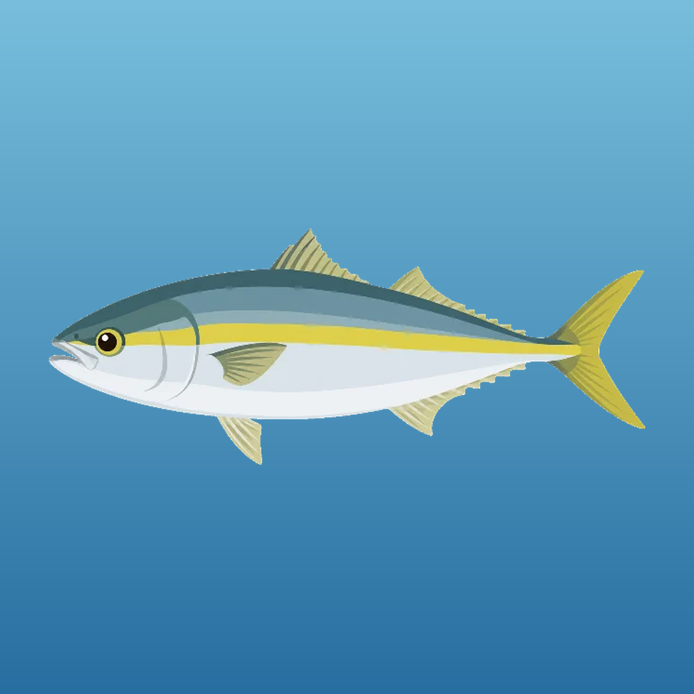

魚歴 - 魚図鑑と食べた魚の記録
報道関係の方へ。記事や紹介に使える資料をまとめています。
これまでに食べた魚を、魚ごとに「どこまで体験したか」の5段階で記録する図鑑のアプリです。記録するほど図鑑が色づいていきます。
事実
| 名前 | 魚歴 - 魚図鑑と食べた魚の記録（読み: ぎょれき） |
|---|---|
| 開発 | kuwabaky（日本の個人の開発者） |
| 配信日 | 1.0: 2026年10月2日 1.1.0: 2026年11月17日 |
| 機種 | iPhone、iPad（iOS 16.4 以上） |
| 値段 | 無料（広告あり）。広告を消す「魚歴プレミアム」: 年額 1,000円（はじめての方は最初の1ヶ月無料）、月額 200円、買い切り 1,500円 |
| 言語 | 日本語 |
| 配信の国 | 日本 |
| カテゴリ | フード/ドリンク、ライフスタイル（4+） |
| App Store | apps.apple.com/jp/app/id6816183382 |
| 公式ページ | kuwabaky.github.io/gyoreki/ |
説明
ぎょれき（魚歴）は、これまでに食べた魚を記録していくアプリです。魚ごとに「どこまで体験したか」を5段階から選ぶだけ。レベルの合計が「点数」に、食べた魚の数が「種数」になり、記録するほど図鑑が色づいて、その人だけの魚歴ができあがっていきます。
収録しているのは500種以上の魚介です。マグロやサーモン、アジといった定番から、ノドグロやキンキなどの高級魚、川魚、深海魚、イカ・タコ・エビ・カニ・貝・ウニまで。魚をタップすると、分布・旬・おいしい食べ方・特徴をまとめた図鑑のシートが開きます。
標準和名だけでなく、お店での呼び名や地方名、出世魚の名前でも探せます（「ホンマグロ」でクロマグロが見つかります）。1.1.0 からは、漢字（笠子、鰰）、ローマ字（maguro）、学名でも探せるようになり、貝やエビ・カニなどの旬を県や水産の資料で確かめて一部を直しました。
食べた魚の種数と点数は、食べた魚のイラストを並べた1枚の画像にして、X・Instagram・LINE などに送れます。会員登録やログインは要らず、記録は端末の中だけに保存されます。
5段階の体験レベル
| Lv0 未経験 | 食べたことがない |
| Lv1 食べた | お店や惣菜などで食べた |
| Lv2 調理した | 自分で調理して食べた（柵・切り身からも） |
| Lv3 捌いた | 丸ごと一尾を自分で捌いて食べた |
| Lv4 獲った | 自分で獲って食べた（釣り・潮干狩り・素潜りなど） |
見どころ
- 食べた・調理した・捌いた・獲ったの5段階で、魚との付き合い方まで記録できる。
- 500種以上の魚介の図鑑。お店の呼び名、地方名、漢字、ローマ字、学名でも探せる。
- 食べた魚の種数と点数を、魚の絵を並べた1枚の画像にして共有できる。
ご注意: 図鑑の情報は一般的な参考情報です。毒のある魚や寄生虫、アレルギーには十分ご注意ください。フグなど調理に資格が必要な魚は、資格のない方は捌かないでください。
画面写真
iPhone（6.9インチ、1320 × 2868）の、文字の入っていない元の画像です。画像を押すと元の大きさで開きます。まとめてダウンロード（zip）


画面の記録は撮影用の見本です。
アイコン
アイコン（1024 × 1024 の PNG、角を丸めていない物）。形を変えずにお使いください。

開発者
kuwabaky は、日本の個人の開発者です。ほかに、惑星を進化させる合体パズル「わくせいゲーム」を公開しています。
使ってよい範囲
このページの文、画面写真、アイコンは、記事、紹介の動画、配信などで、ご連絡なしに自由にお使いいただけます。記事の内容も自由です。
連絡先
取材やご質問は、サポートのページに載せているメールアドレスへお送りください。